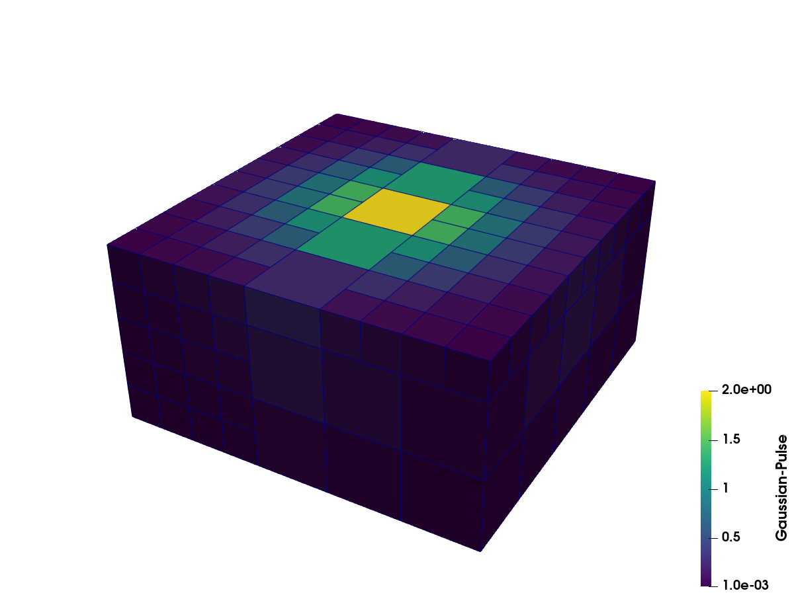

OverlappingAMR: Gaussian pulse
Port of the amr_gaussian_pulse.vtkhdf example from the VTKHDF specification: a two-level overlapping AMR of a Gaussian pulse with the same box layout as the reference file. Box extents are inclusive cell-index ranges in each level's spacing; here the refinement ratio between the levels is 2.
What you'll learn: how levels, spacing, box extents, and cell data fit together in an OverlappingAMR dataset.
Clipped through the pulse center in ParaView; the cell edges show the two refinement levels:


using VTKHDF
origin = (-2.0, -2.0, 0.0)
center = (-0.75, -0.75, 1.25)
coarse_spacing = (0.5, 0.5, 0.5)
fine_spacing = (0.25, 0.25, 0.25)
coarse_box = (0, 4, 0, 4, 0, 4)
fine_box_left = (0, 3, 0, 5, 0, 9)
fine_box_right = (6, 9, 4, 9, 0, 9)Cell centroids of a box, as a (3, ncells) matrix (x fastest, VTK order):
A cell with index (i, j, k) has physical center origin + spacing .* ((i, j, k) .+ 0.5). Halving the spacing therefore makes two fine cells span the same distance as one coarse cell. The named extents below reproduce the overlapping box layout of the reference file.
function centroids(extents, spacing)
(i0, i1, j0, j1, k0, k1) = extents
cells = vec(collect(Iterators.product(i0:i1, j0:j1, k0:k1)))
return [origin[d] + spacing[d] * (c[d] + 0.5) for d in 1:3, c in cells]
end
function add_pulse_box(lvl, extents, spacing)
c = centroids(extents, spacing)
pulse = [2 * exp(-sum(abs2, c[:, i] .- center) / 0.5) for i in axes(c, 2)]
return add_box(lvl, extents; celldata = ("Gaussian-Pulse" => pulse, "Centroid" => c))
end
vtkhdf_amr("gaussian_pulse"; origin) do amr
level0 = add_level(amr; spacing = coarse_spacing)
add_pulse_box(level0, coarse_box, coarse_spacing)
level1 = add_level(amr; spacing = fine_spacing)
add_pulse_box(level1, fine_box_left, fine_spacing)
add_pulse_box(level1, fine_box_right, fine_spacing)
endReading it back
Levels are addressed by their on-disk number; each level exposes its spacing, boxes and (box-concatenated) data arrays:
r = vtkhdf_open("gaussian_pulse")
level1 = VTKHDF.amr_level(r, 1)VTKHDFAMRLevel 1 (2 boxes)This reports the fine spacing and its two box extents:
VTKHDF.level_info(level1)(spacing = (0.25, 0.25, 0.25), boxes = [(0, 3, 0, 5, 0, 9), (6, 9, 4, 9, 0, 9)])Each fine box contains 4 × 6 × 10 = 240 cells, concatenated into one 480-value level array:
length(level1["Gaussian-Pulse"]) # 480480close(r)